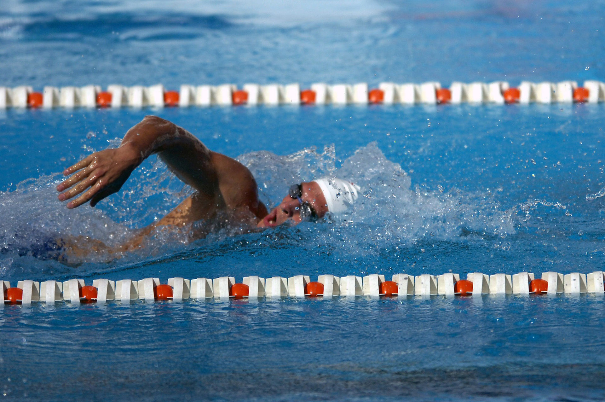
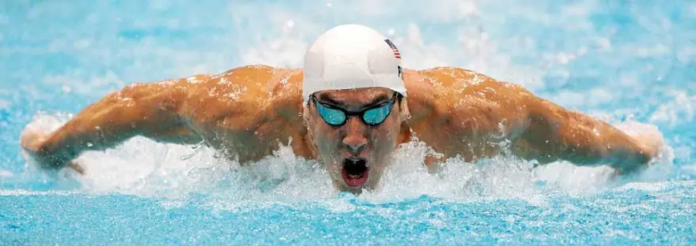
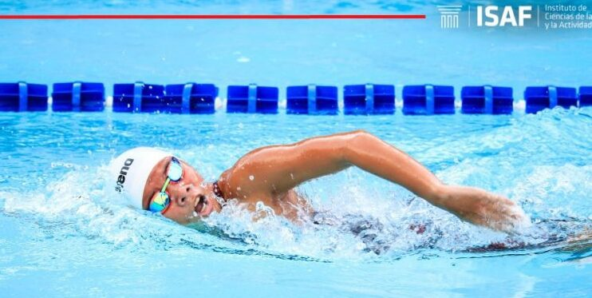
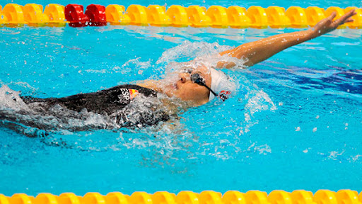
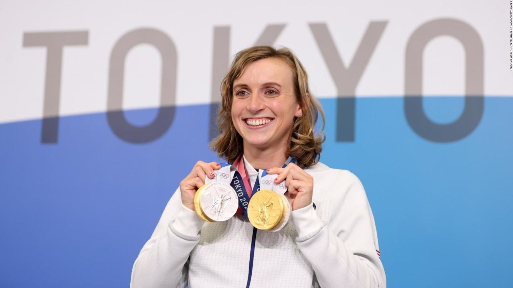

¿Què es Nataciòn?
Nataciòn consiste en el desplazamiento de una persona en el agua, sin que este toque el suelo
¿Cuantos estilos hay?
En natación, existen cuatro estilos reconocidos: Crol (o estilo libre), Espalda, pecho y Mariposa. Estos son los estilos que se utilizan en competiciones oficiales y que los nadadores deben aprender y practicar
Estilo mariposa
Los brazos se mueven al mismo tiempo por encima y por debajo del agua, mientras que las piernas realizan una patada de delfín, que implica un movimiento ondulatorio y simultáneo
Estilo Crol
acción coordinada de brazos, piernas y tronco, cuyo propósito principal es alcanzar la máxima velocidad de desplazamiento del nadador a través del agua.
Estilo espalda
es aquel en el que el nadador flota con la espalda hacia arriba en el agua, utilizando ambos brazos de forma alternada para impulsarse y desplazarse
campeones de natación en las Olimpiadas
Michael Phelps
Con un total de 28 medallas, incluyendo 23 medallas de oro, es el deportista olímpico más condecorado de la historia.

Katie Ledecky
Con 8 medallas de oro, es una de las nadadoras más exitosas de todos los tiempos.
